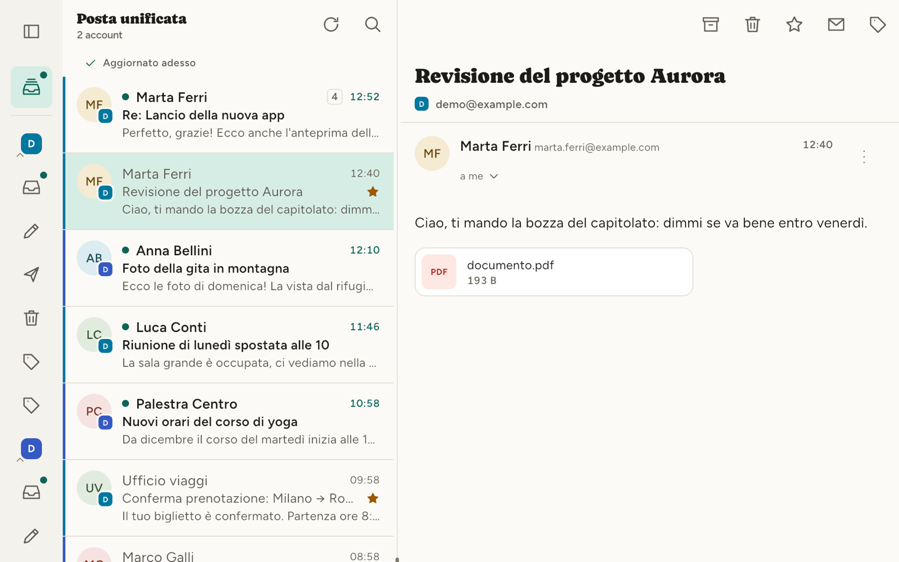
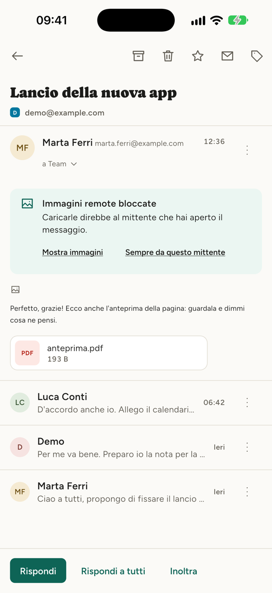
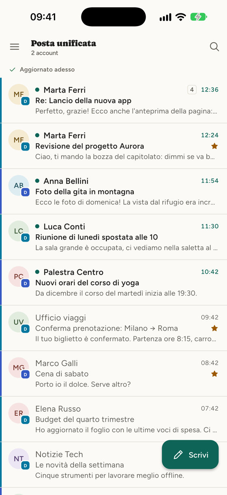
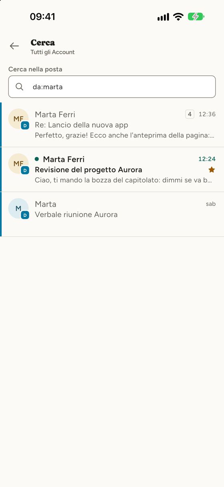

Client di posta
La tua posta, tutta in un posto.
Un client di posta che riunisce tutti i tuoi Account email in un unico posto, veloce anche offline.
Gratis · macOS, Android, iPhone e iPad · Versione __VERSION__


Nessun server per la posta
Postino non ha un server suo per la posta: parla solo con i tuoi Provider.
Cifrata sul dispositivo
La posta recente è salvata in un database cifrato sul tuo dispositivo: la leggi anche senza rete.
Niente analytics né pubblicità
Nell'app non ci sono analytics, pubblicità né raccolta automatica degli errori. Unica eccezione, la lettura dei QR su Android: è nell'informativa sulla privacy.
Posta unificata
Tutti i tuoi Account in un'unica Posta in arrivo.
Ordinata per data. Ogni Account ha il suo colore, così riconosci a colpo d'occhio da dove arriva un messaggio.
- GmailAccesso con Google
- Outlook.com, Hotmail, LiveAccount Microsoft personale
- Microsoft 365Account di lavoro o scuola
- iCloud e qualsiasi casella IMAPCon la password

Offline e privata
La leggi anche senza rete.
La posta recente è salvata in un database cifrato sul tuo dispositivo. Postino non ha un server suo per la posta: parla solo con i tuoi Provider.
- Le Azioni (archivia, Stella, segna come letto…) partono quando la rete torna.
- Le immagini remote restano bloccate finché non scegli di vederle.
Ricerca
I risultati compaiono mentre scrivi.
Dalla posta sul dispositivo, con i filtri. Per la posta più vecchia la Ricerca continua sul Provider.
- Non letti
- Stella
- Allegati
- Account
- Date

E in più.
Notifiche con Azioni
Le notifiche di posta nuova sono raggruppate per Account e hanno due pulsanti a tua scelta, ad esempio Archivia e Segna come letto.
Etichettatura automatica sul dispositivo
Attiva l'Etichettatura automatica su un'Etichetta, se vuoi con una descrizione, e Postino la assegna da solo ai messaggi nuovi che le somigliano. Il modello gira sul dispositivo.
Impostazioni sincronizzate
Se lo attivi, Postino tiene allineati tra i tuoi dispositivi Account, colori, Azioni a scorrimento ed Etichette automatiche, nel tuo Google Drive. Tutto cifrato, con una chiave che resta sui tuoi dispositivi. Mai la posta.
Privacy
La posta viaggia solo tra te e i tuoi Provider.
Lo sviluppatore riceve i tuoi dati solo se gli mandi tu una Segnalazione di un problema.
Su macOS la chiave del database non è ancora protetta dai backup. Sta nel Portachiavi di login e può finire nei backup di Time Machine. Leggi l'informativa sulla privacy
Posta cifrata sul dispositivo
Intestazioni, testi, Etichette, Bozze e messaggi in uscita stanno in un database cifrato con SQLCipher.
Credenziali nel portachiavi del sistema
Token di accesso e password si usano solo con il Provider a cui appartengono.
Etichettatura automatica sul dispositivo
Il modello gira sul dispositivo: il contenuto dei messaggi non viene inviato a nessun servizio.
Immagini remote bloccate
Si scaricano solo se scegli di vederle, per un messaggio o per un Mittente fidato.
Un sito senza cookie
Queste pagine non usano cookie, analytics né contenuti di terze parti: anche i font sono serviti da qui.
Guida
Dall'installazione al primo Account.
Requisiti, installazione e aggiornamenti passo per passo sono nella Guida per gli invitati.
Apri la guida- Installare Postino su macOSApri il DMG e trascina Postino nella cartella Applicazioni.
- Installare Postino su AndroidScarica l'APK dal browser del telefono e consenti l'installazione.
- Installare Postino su iOSCon TestFlight, su invito, finché non arriva sull'App Store.
- Collegare un Account GmailLa schermata «Google non ha verificato questa app» e il limite di 100 Account Google.
Versione __VERSION__ · gratis
Scarica Postino
I pulsanti scaricano la versione __VERSION__.
-
macOS
Presto sul Mac App Store
Apri il DMG e trascina Postino nella cartella Applicazioni. L'app è firmata dallo sviluppatore, notarizzata da Apple e si aggiorna da sola.
Scarica il DMG -
Android
Scarica l'APK dal browser del telefono, non dal browser interno di un'altra app, e aprilo. Quando Android lo chiede, consenti l'installazione da origini sconosciute.
Scarica l'APK -
iPhone e iPad
Presto sull'App Store
Il link comparirà qui alla pubblicazione. Intanto si installa con TestFlight, su invito.
Come installarlo con TestFlight
Domande frequenti
Come apro Postino su macOS?
Al primo avvio macOS chiede conferma per un'app scaricata da Internet: scegli «Apri».
Come si aggiorna Postino?
Su macOS si aggiorna da solo, e puoi cercare gli aggiornamenti con «Cerca aggiornamenti…» nel menu Postino. Su Android e iOS Postino ti avvisa quando esce una versione nuova: su Android installa il nuovo APK sopra quello che hai, su iOS aggiornalo dall'App Store o da TestFlight. Account e posta restano.
Per tutto il resto, dal collegamento di un Account Gmail alla Segnalazione di un problema, c'è la Guida per gli invitati.
Link stabili
I pulsanti qui sopra restano fissi sulla __VERSION__. Questi link puntano sempre all'ultima versione.